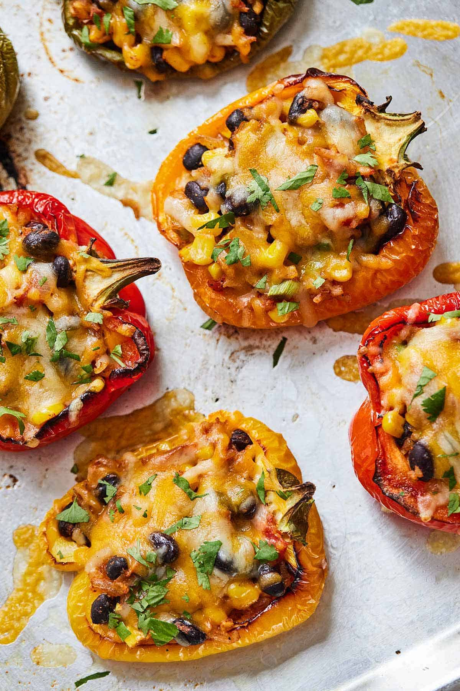

Stuffed Bell Peppers
Description
Colorful bell peppers filled with healthy goodness then topped off with cheese, these flavorful stuffed peppers are so easy to make. This recipe is an easy way to get more veggies on the table as everything is neatly packed up inside a bell pepper!
Ingredients
- 4 large red bell peppers (or any color you choose)
- 1 Tbsp olive or vegetable oil
- 1/2 medium yellow onion, diced
- 3 cloves garlic minced
- 1 cup Mexican rice
- 1 tsp salt
- 2 roma tomatoes, diced
- 3-4 green onions, chopped
- 2 Tbsp taco seasoning
- 1 can black beans, drained and rinsed
- 1 cup frozen corn
- 1 cup shredded pepper jack cheese
- chopped fresh cilantro (garnish)
Steps
- Preheat oven to 400 F.
- Cut the bell peppers in half lengthwise, from stem to base and remove all of the seeds and white membranes. Drizzle with olive oil and bake for 20 to 25 minutes until the edges of the bell peppers have begun to blister and they are soft enough to pierce with a fork.
- While the bell peppers are roasting, in a large skillet over medium high heat, add the onion and salt and cook until the onion has softened. Add the tomato and cook for 3 to 5 minutes.
- Next add the garlic and taco seasoning and cook for another 30 seconds to a minute, or until fragrant.
- Add green onions, black beans, corn, and Mexican Rice. Mix to combine and heat until warm throughout. Add salt and pepper to taste.
- After the bell peppers have finished cooking, spoon a heaping spoonful of the mixture into each bell pepper. Top each one with cheese and place back into the oven until the cheese has completely melted.
- Garnish with fresh chopped cilantro.